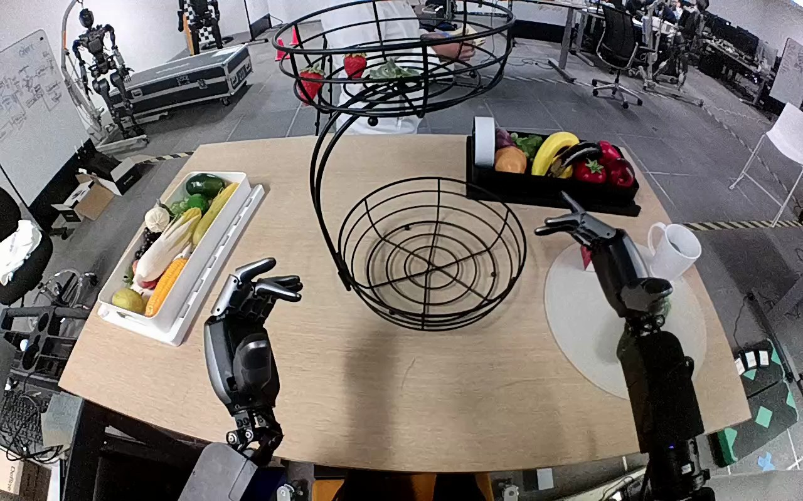

NVIDIA GR1 · 85
Video 85

Visual review action_review.json
{
"prompt_protocol": "humanoid_action_v1",
"prompt_provenance": "visually_authored_from_video_and_initial_frame",
"reviewed_contact_sheets": [
"sheet_001.jpg"
],
"inspected_frame_stride": 2,
"inspected_sampled_frame_count": 60,
"initial_scene": "Robot-mounted forward/downward view with both forearms emerging from the lower body-side positions. A green cucumber lies on the white circular surface to the robot's right, partly hidden by the initial right hand. The empty lower tier of a two-tier black wire basket is centered ahead; the left hand is open near its left side.",
"observed_sequence": [
{
"start_frame": 0,
"end_frame": 47,
"action": "Right arm moves outward and down toward the cucumber on the white circular surface, exposing the initially occluded object. Left hand makes a small positional adjustment near the lower basket without contacting it.",
"confidence": "high"
},
{
"start_frame": 48,
"end_frame": 65,
"action": "Right hand hovers with fingers spread around the cucumber and lowers to enclose it. The cucumber initially remains on the circular surface.",
"confidence": "high"
},
{
"start_frame": 66,
"end_frame": 79,
"action": "Right fingers close around the cucumber and rotate it across the circular surface into a secure grasp. Left hand remains open and separate.",
"confidence": "high"
},
{
"start_frame": 80,
"end_frame": 109,
"action": "Right hand lifts the cucumber fully off the circular surface and carries it inward toward the lower basket while retaining its grasp.",
"confidence": "high"
},
{
"start_frame": 110,
"end_frame": 113,
"action": "Right hand holds the cucumber over the lower basket and opens its fingers, letting the cucumber descend into it.",
"confidence": "high"
},
{
"start_frame": 114,
"end_frame": 119,
"action": "Cucumber is free of the open right hand, drops onto the lower basket wires and visibly moves within the basket. Right hand remains open above and to the right; no subsequent retrieval or withdrawal is shown.",
"confidence": "high"
}
],
"arm_hand_roles": {
"right": "Sole manipulating hand: approaches, encloses and grasps cucumber, lifts and transports it, then opens to release it into lower basket.",
"left": "Open hand remains near the lower basket's left side, with small positional changes but no visible object grasp or basket stabilization.",
"coordination": "Single-hand manipulation; no hand-to-hand transfer, bimanual support, or interaction with the background person."
},
"anatomical_side_evidence": {
"description": "The view looks forward/down from the robot between its own arms. The manipulating forearm enters from the robot's lower-right body-side attachment and extends forward on that side; the other arm enters from the lower-left attachment. This ego-view body-relative forearm placement establishes the active anatomical right hand, consistent with the source instruction; sides are not inferred from a front-facing image convention.",
"confidence": "high"
},
"uncertainties": [
"The cucumber is still shifting within the lower basket in the final frames; its later fully settled orientation is not shown. Exact individual finger contact points are partly obscured during grasp, although the secure lift and later release are visible."
],
"annotation_discrepancies": [],
"evidence_frame_indices": [
0,
48,
58,
66,
78,
84,
94,
110,
112,
114,
116,
119
],
"selected_execution_status": "success",
"inspection_coverage": {
"source_frame_interval": [
0,
119
],
"sampled_frames": "All even source frame indices 0 through 118 viewed on sheet_001.jpg.",
"native_initial_png_viewed": true,
"native_transition_and_final_frames_viewed": [
48,
58,
66,
78,
84,
94,
110,
112,
114,
116,
119
]
},
"terminal_state": "The cucumber has been released into the lower black wire basket and is still moving against its base wires. The right hand is open above and to the right of it, and the left hand remains open without contact.",
"video_id": "85",
"dataset": "NVIDIA_GR1_100",
"dedicated_review_agent": "review_gr1_85",
"review_source_video": "NVIDIA_GR1_100/85/original/original.mp4",
"source_frame_count": 120,
"source_fps": 20.0,
"native_detail_frames": [
48,
58,
66,
78,
84,
94,
110,
112,
114,
116,
119
],
"world_model_prompt": "The robot uses its right hand to grasp the green cucumber on the white circular surface and lift it clear of the tabletop. It carries the cucumber over the lower tier of the black wire basket, opens its fingers, and releases it into the basket, leaving its right hand open above it. Keep the camera fixed; preserve robot geometry, physically valid joint motion, and normal gripper opening and closing.",
"original_task_instruction": "Use the right hand to pick up green cucumber from white cirlce to lower level of black basket.",
"selected_segment": {
"start_frame": 0,
"end_frame_exclusive": 120,
"reason": "Complete original single-task reference; no cropping or trimming requested."
},
"source_video_sha256": "c7a17f59628c872e3f44486467220e1a419765508f2a6175a69e921de1a0fba9",
"review_completed_at": "2026-10-13T18:36:38.742989+00:00"
}